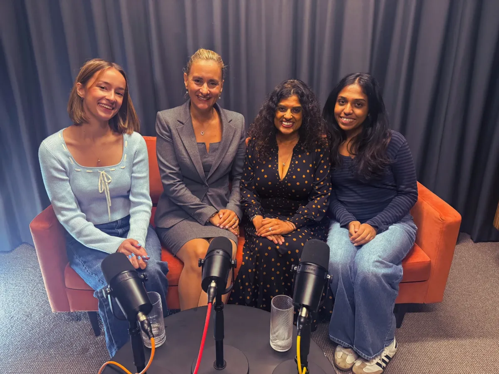

From first chat to first episode: what working with us looks like
Thinking about a podcast for your business, but not sure what happens after you get in touch? Here’s the whole journey, from the first chat to your first episode going live, so you know exactly what to expect.

Your first chat is with Damien and Peter
When you get in touch, you’ll speak to Damien, who founded MBMS Podcast Studio, and Peter. Their job is to work out what a podcast could do for your business, and whether it’s the right move for you at all.
It’s a conversation, not a sales pitch. They’ll usually ask:
- What do you want the podcast to achieve: awareness, trust, leads or a launch?
- Who do you want to reach, and where do they spend their time?
- Who could be on it: your team, customers, partners or experts in your industry?
- Do you already record anything, like webinars, talks or videos?
- When would you like to launch, and what budget are you working with?
You don’t need a finished idea. Plenty of people come to us with just a goal, and shaping the idea is part of the conversation.
Then a plan and a clear price
After the chat, we come back with a suggested format and a price, with no jargon. Most businesses start in one of three ways:
- A pilot episode, from £750. One episode to test the waters before committing to a series.
- A complete episode package, from £950. Recording, editing, show notes, distribution and three social clips.
- A monthly package. A set number of episodes each month, with clips and posts to match your plans.
For a fuller breakdown, see our guide to how much a podcast costs.
What happens next
- Planning callWe agree the goal, the audience and the guests for your first episode.
- We prepareWe draft the outline and questions, brief your guests and sort the logistics.
- RecordAt our London studio, at your office or remotely. You just turn up and talk.
- We produceEditing, sound, show notes, clips and written posts, sent to you to approve.
- Launch, then four weeks of contentThe episode goes live everywhere, with clips and posts spread across the month.
How much of your time it takes
About three hours per episode: a 30-minute planning call, up to 90 minutes recording, and around an hour reviewing the edit, clips and posts. Everything else is on us.
What to have ready before you talk to us
None of this is essential, but it helps make the first chat more useful:
- One sentence on what you’d like the podcast to do for your business
- Two or three people you’d love to have as guests
- Links to anything you’ve already recorded, like webinars or videos
- A rough launch date, if you have one in mind
See how we work, and talk to Damien and Peter
Our work, our prices and the answers to the questions people ask before they start, all on one page. Send us a message from there and we’ll come back to you.
See how we workQuestions before you get in touch
Who will I speak to first?
Damien, who founded MBMS Podcast Studio, and Peter. They'll ask what you want a podcast to do for your business and come back to you with a format and a clear price.
How much does a business podcast cost with MBMS?
A pilot episode starts from £750 and a complete episode package from £950, covering recording, editing, show notes, distribution and three social clips. Regular clients can have a tailored monthly package.
How much of our time does each episode take?
About three hours: a 30-minute planning call, up to 90 minutes recording, and around an hour reviewing the edit, clips and posts. We handle the rest.
Do we need to know what our podcast is about before we get in touch?
No. Many people come to us with a rough idea or just a goal, like more leads or a product launch. Shaping the idea is part of the first conversation.
Ready for the first chat?
Tell us what you’d like your podcast to do, and we’ll suggest a format and a clear price.
One conversation. A month of marketing.